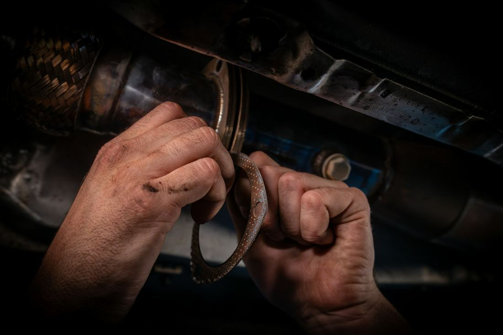

Mechanical support that keeps you moving.
Tomy Automative Group Inc. is a Canadian mechanical support and vehicle maintenance company. Hands-on mechanical expertise, backed by modern tools, to keep vehicles reliable and people on the road.
Vehicle support, start to finish
Maintenance, diagnostics, parts and guidance from one team.
Request serviceMechanical Support & Maintenance
Preventive care, routine servicing and repair support.
Read more02Diagnostics & Vehicle Health
Find the cause, understand the condition, decide what comes first.
Read more03Automotive Parts Support
The right parts for your vehicle, explained clearly.
Read more
Built on real mechanical expertise
Tomy Automative Group Inc. is not a traditional repair shop. We combine hands-on mechanical knowledge with clear communication and modern tools.
- Mechanical expertiseThe foundation of everything we do.
- Vehicle supportThe service around your vehicle.
- MobilityA vehicle you can depend on.
- TechnologyTools that make the work clearer.
Our services
Mechanical Support & Maintenance
Preventive care, routine servicing and repair support.
Diagnostics & Vehicle Health
Find the cause, understand the condition, decide what comes first.
Automotive Parts Support
The right parts for your vehicle, explained clearly.
Automotive Training
Practical skills sessions with a company Certificate of Completion.
Vehicle Support & Transition
Help at the moments a vehicle is bought, sold or changes use.
Technology & AI
Modern tools that support, never replace, the mechanic.
Tell us what your vehicle needs
Send a request with your vehicle and what you have noticed. We will come back to you.
Running vehicles for a living?
Fleets and businesses need vehicles that are ready when the work is. See how we support them.